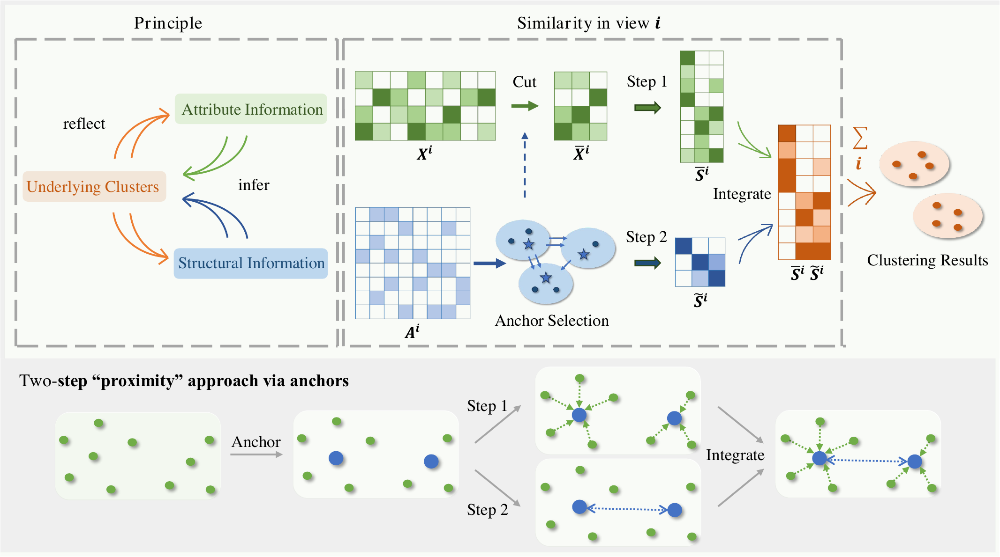
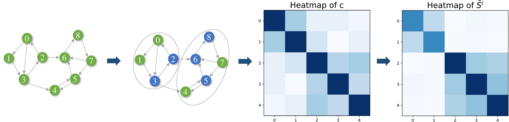
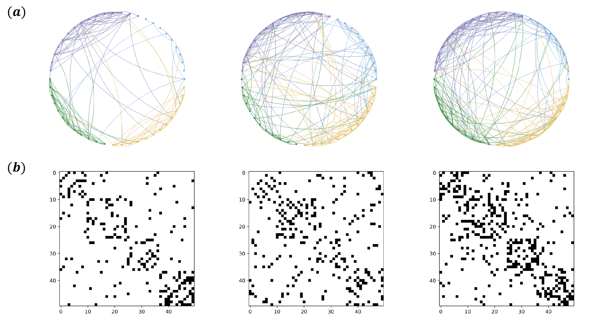
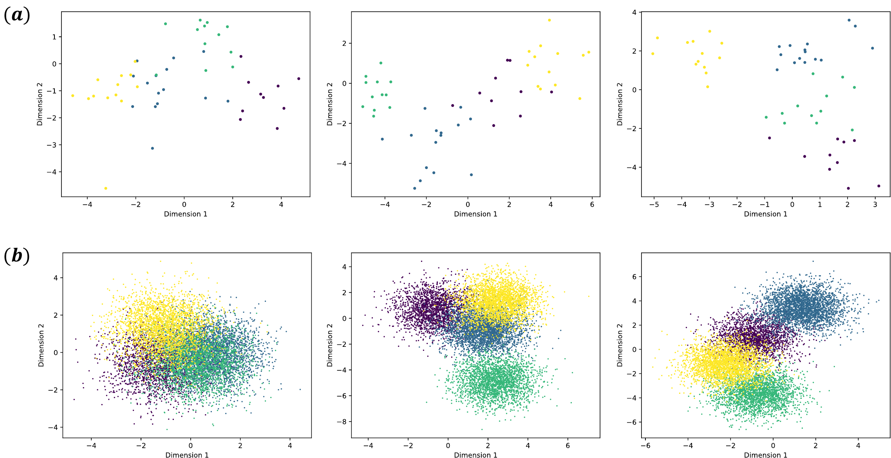
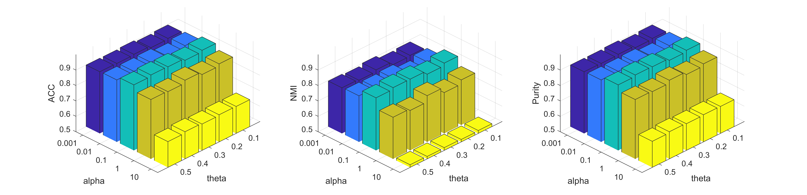

社交社区
用户属性描述个体特征，有向互动关系反映信任与影响传播。
AAS 面向同时具有节点属性、多个视图和有向关系的数据。核心思想是以 anchors 为桥梁，将“属性上相近”与“结构上属于同一强连通区域”共同写入相似矩阵，再在统一优化框架中得到聚类结果。
社交平台中的用户既有文本或画像属性，也存在关注、信任等有向关系；贸易网络中的国家有经济指标，也存在进口与出口方向。多视图聚类希望综合这些来源，发现单一视角下不明显的群体结构。
用户属性描述个体特征，有向互动关系反映信任与影响传播。
经济指标提供属性视图，进口与出口形成非对称结构视图。
节点功能和连接方向共同决定潜在模块，结构不能被简单无向化。
融合不同视图的互补信息，输出稳定、可解释的聚类划分。
多数多视图聚类方法根据节点属性构造相似矩阵；即使使用结构，也常将有向关系对称化，损失非对称信息。Anchor 方法可以降低大规模聚类的复杂度，但常在所有视图中使用固定数量甚至同一组 anchors。
AAS 的动机不是把结构特征简单拼到属性后面，而是利用有向图的强连通分量寻找潜在簇，让同一结构区域内的 anchors 进一步靠近，从而强化相似矩阵中的块状聚类信号。

方法由三个相互衔接的模块组成。点击模块可查看其输入、作用和输出。
通过概率转移矩阵的左特征向量迭代识别强连通分量，并在每个分量内依据中心性选择 anchors。不同视图可以拥有不同数量和不同位置的 anchors。

第一步构造节点到 anchors 的属性相似矩阵；第二步根据有向最短路和强连通分量构造 anchor 结构相似矩阵，使同一结构簇中的 anchors 更接近。
将融合后的相似矩阵送入调整后的 NESE 框架，交替更新节点-聚类表示 H、各视图谱表示 Fᵢ、视图权重 pᵢ 与属性相似矩阵。
实验覆盖 Attribute SBM_50、Attribute SBM_10000，以及只有三视图有向结构而无有效节点属性的 Seventh graders。评价指标为 ACC、NMI 与 Purity。
| Dataset | Method | |||
|---|---|---|---|---|
| Attribute SBM_50 | AAS | 0.932 | 0.852 | 0.932 |
| Attribute SBM_10000 | AAS | 0.815 | 0.789 | 0.815 |
| Seventh graders | AAS | 0.882 | 0.693 | 0.891 |
| Seventh graders | K-means | 0.655 | 0.052 | 0.655 |



α 控制属性相似矩阵中的正则项，θ 控制各强连通分量的 anchor 比例。实验显示 α=0.1、θ=0.3 在当前设置下较优；算法约在 20 次迭代内基本收敛。
convergence + sensitivityAAS 通过结构引导的 anchors 和两步 proximity，将节点属性、强连通结构与多视图共识聚类放入统一框架。实验表明，明确利用有向结构能够提升聚类准确率，且在属性缺失时仍能提供有效信号。
方法依赖有向网络中可利用的强连通模式；结构融合会增加计算开销。面向更复杂、更稀疏或更大规模的真实网络，anchor 构造与优化效率仍有改进空间。